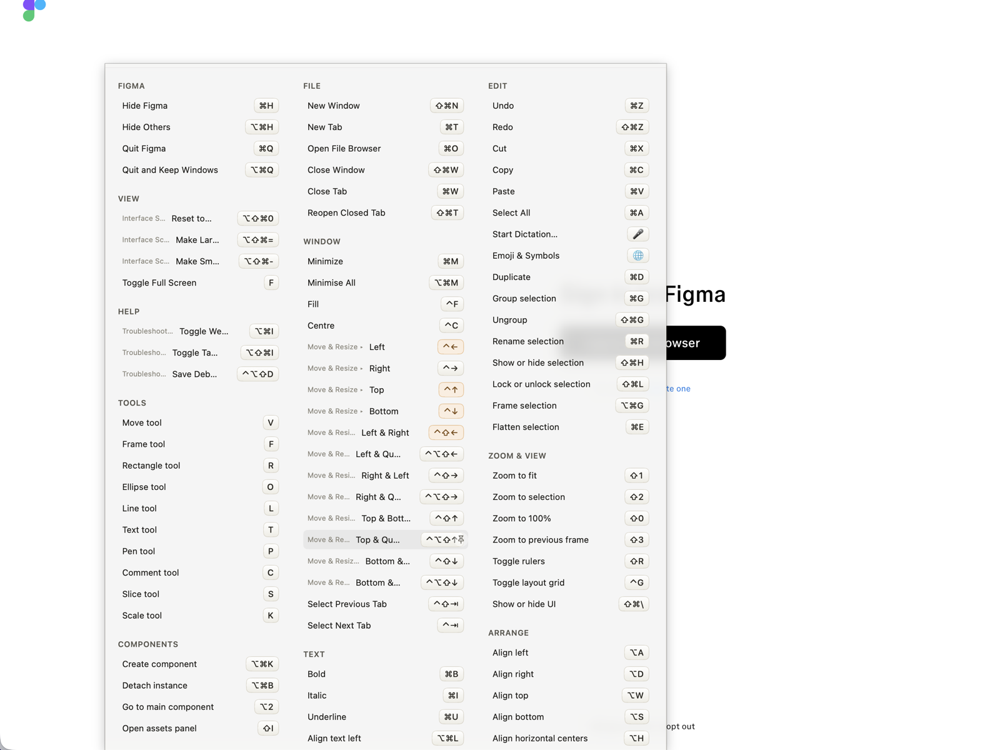

Keysi reads an app's live menu tree, which is how it can show you every shortcut of whatever you're in without anyone maintaining a list. Some apps defeat that: Vim and tmux have no macOS menus to read, and Electron apps like Slack keep their real bindings in the renderer rather than the menu bar.
For those, Keysi ships hand-written sheets. They're free, they're not part of Keysi Pro, and you can fork any of them.
7 sheets · 269 shortcuts.
| App | Shortcuts | Matched by |
|---|---|---|
| Emacs | 32 | Terminal foreground process |
| Excel | 29 | Bundle ID |
| Figma | 43 | Bundle ID |
| Slack | 29 | Bundle ID |
| tmux | 37 | Terminal foreground process |
| Vim | 73 | Terminal foreground process |
| Word | 26 | Bundle ID |

Any app can have one. A sheet is a JSON file in ~/Library/Application Support/Keysi/Sheets/ naming the app it applies to and the shortcuts you want listed; Keysi has a built-in editor so you don't have to write it by hand. Set mode to augment to add to whatever Keysi already found in the app's menus, or replace to drop that entirely, which is what you want for an Electron app whose menu bar lies about its real bindings.
Download any sheet above as a starting point.
Custom sheets are free. So is the built-in editor, and so is everything else on this page.